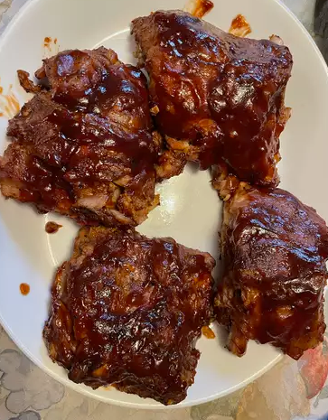

Ribs

These slow cooker ribs are the best I've had, short of the actual grilling method of course! They're easy to make by just cooking them in the slow cooker until tender, covering them with barbeque sauce, and finishing them off in the oven. This is what I do when I want ribs during the week — I'm eating them within 30 minutes of getting home, and they turn out perfect every time!
Ingredients
- 3 pounds baby back ribs, trimmed
- salt and ground black pepper, to taste
- ½ cup water
- ½ onion, sliced
- 1 clove garlic, minced
- 1 (18 ounce) bottle barbeque sauce
Steps
- Season ribs with salt and pepper.
- Pour 1/2 cup water into the slow cooker, then add ribs. Scatter onion and garlic over top. Cover and cook on Low for 8 hours or High for 4 hours.
- When the ribs are almost finished, preheat the oven to 375 degrees F (190 degrees C).
- Transfer ribs from the slow cooker to a baking sheet; discard onion and garlic. Coat ribs with barbeque sauce.
- Bake ribs in the preheated oven until sauce caramelizes and sticks to meat, 10 to 15 minutes.